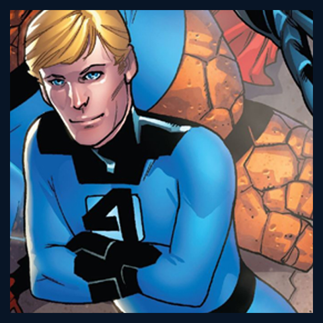
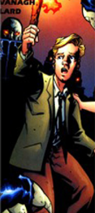

Les débuts de la torche
Ce voyage spatial va boulverser la vie d’un ado vivant dans une banlieue. Et le propulser au devant de la scène.
Qui est Jonnhy Storm ?
N’avez-vous jamais rêvé de pouvoir voler ? De pouvoir contrôler l’élément le plus dangereux et époustouflant qu’est le feu? Et bien lui, Jonnhy Storm... Il le peut. Mais vous devez plus en entendre parler sous le nom de torche humaine. Cet homme blond aux yeux bleus qui a la capacité d’enflammer tout ce qu’il veut. Il serait d’ailleurs temps de vous raconter son histoire... Etant membre permanant des 4 fantastiques, il est connu de tous, et ça des petits jusqu’aux grands.
Une jeunesse difficile
Mais il n’est pas né avec une telle popularité loin de là. Issu d’une banlieue de Glenville près de New-York, il a perdu sa mère à l’âge de 9 ans et son père après. Il a donc grandit au côté de sa tante et de sa soeur, la future femme invisible. Attiré par les voitures, il est devenu un spécialiste dans ce domaine, et ça, dès l’âge de 16 ans. Tous nous fait alors penser à une vie d’adolescent normal ayant été confronté au malheur bien trop jeune. A cette époque-là, le jeune Jonnhy Storm ne savait encore pas à quel point tout allait changer pour lui...
Le début d'une grande histoire
Dès leur atterrissage forcé sur Terre, ils ont tous, petit à petit, découvert l’existence de pouvoirs paranormaux. Le jeune Johnny Storm, lui, à compris qu’il était capable d’enflammer chaque parcelle de son corps. De façon indépendante. Ou alors entièrement. Tout dépendant de sa volonté. La Torche humaine est alors née, laissant derrière elle un adolescent fan de voiture et de mécanique, créant un jeune homme capable de contrôler le feu, et de sauver le monde